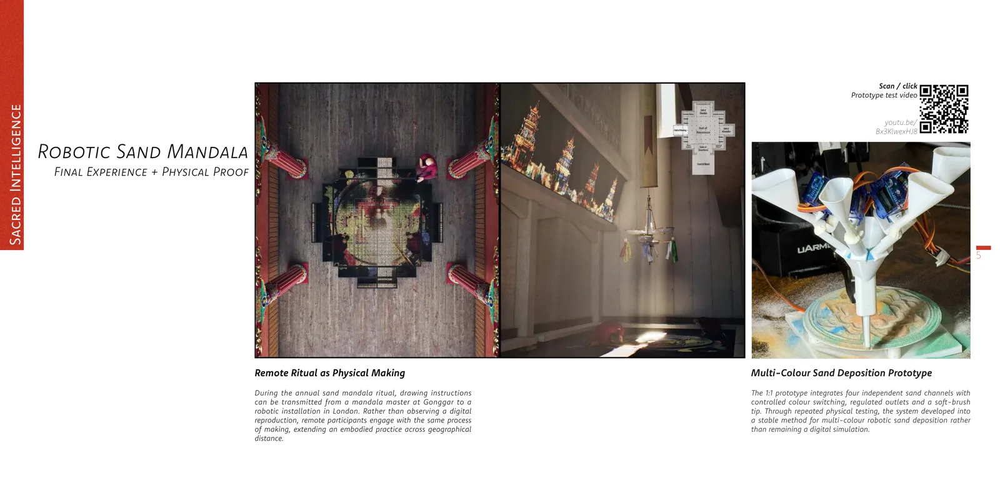
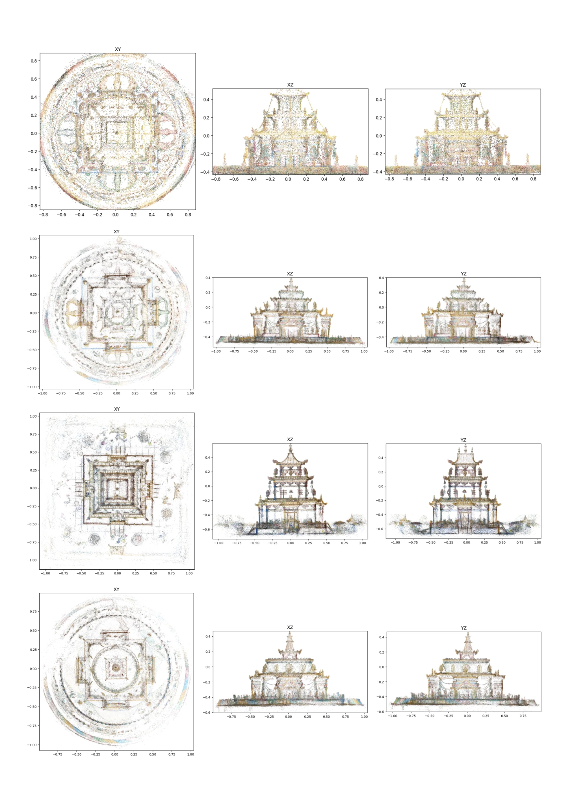
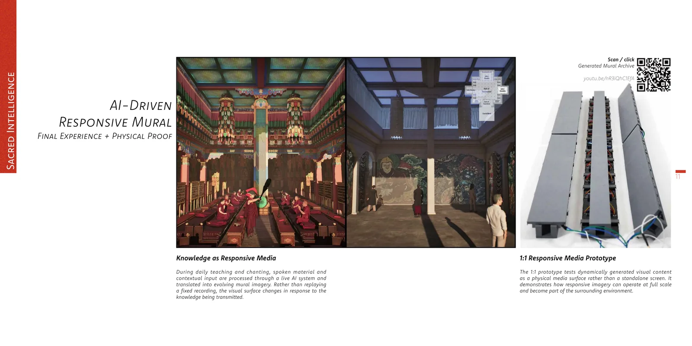

Acquire
LiDAR / image-based field capture and environmental scanning.
CAMERA · Studio Engineer Application
From Environmental Scanning to Cultural Digital Twins
I work between architectural survey, real-time spatial media and computational reconstruction: capturing environments as three-dimensional data, testing how those datasets can be inspected, communicated and rebuilt as usable spatial models.

Environment capture
LiDAR / photogrammetric workflows
Gaussian Splatting
3D data inspection
Digital twin creation
Architectural reconstruction
Within Katla
Environmental capture developed with Camille in Iceland, using spatial scanning as a way to retain terrain, scale, atmosphere and spatial relationships beyond conventional photographic documentation. The work sits between field capture and spatial media: raw environmental data becomes a navigable, inspectable and reusable representation of place.
Capture
Field scanning records geometry and spatial continuity so that the environment can be revisited as a three-dimensional dataset rather than a sequence of still images.
Representation
Gaussian Splatting provides a high-fidelity visual layer for reviewing captured space, communicating environmental character and supporting subsequent reconstruction.
Use
The objective is not only visualisation: captured environments become references for analysis, modelling, digital-twin workflows and spatial storytelling.
Sacred Intelligence
The project extends environment capture into cultural heritage. Tibetan Buddhist structures were recorded as Gaussian-splat datasets, then inspected through orthographic projections and translated into cleaner architectural representations. The scan remains evidence; the reconstructed model becomes an editable spatial interpretation.

Scan → Survey → Reconstruction
Gaussian splats preserve fine appearance but do not automatically describe walls, columns, eaves or structural hierarchy. I therefore treat the dataset as survey evidence: principal axes, silhouettes, height bands and repeated components are extracted first, then rebuilt as modular Rhino geometry.
The structures' axial and rotational symmetries make this process efficient. A single calibrated facade can define reusable column, wall-panel, portal, bracket, roof and finial modules, which are mirrored and rotated to reconstruct the complete building.

Technical workflow
The useful part of environment capture begins after acquisition. My workflow combines visual review with numerical inspection so that spatial datasets can move from field evidence to architectural, interactive or digital-twin outputs.
LiDAR / image-based field capture and environmental scanning.
Gaussian Splatting and three-dimensional scene reconstruction.
PLY export, coordinate analysis, orthographic projection and spatial comparison.
Identify axes, levels, envelopes, repeated architectural modules and reliable geometry.
Parametric Rhino reconstruction with scan-derived calibration guides.
Digital twins, spatial media, visualisation, research and cultural documentation.
Working principle
Scan as evidence. Reconstruction as architectural interpretation.
This preserves the richness of the captured environment without confusing noisy scan data with resolved geometry. It also produces models that remain editable, measurable and useful beyond a single visualisation.
Supporting material
Additional evidence of architectural, technical and spatial-media work.
Architecture, computational workflows, digital media and professional practice.
Selected architectural, interactive and technical work.
Research, system architecture, field documentation, prototypes and cultural context.
Zhuyuan Liu